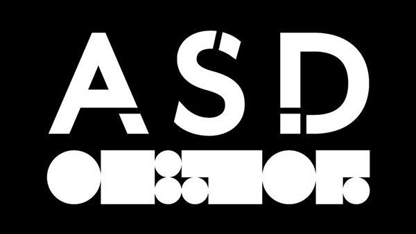

The new ASD 50c coin
Updated: 2022-09-04
I took a very long time to post about the last Australian Signals Directorate (then DSD) decryption, so this time I’ll be a lot more punctual. This article was published today announcing that ASD have collaborated to release a new 50c coin containing a decryption challenge.
The new ASD 50c coin
Updated: 2022-09-04
I took a very long time to post about the last Australian Signals Directorate (then DSD) decryption, so this time I’ll be a lot more punctual. This article was published today announcing that ASD have collaborated to release a new 50c coin containing a decryption challenge.

The new ASD 50c coin
That looks like fun! Typing in the letters and numbers from the image certainly wasn’t, but after that. Of course, I’ll be solving the entire thing with R.
Apparently there’s 4 6 challenges here.
Added 2022-09-04:
The obverse (head) side of the coin

has some boxes under particular letters (bolded here) in “ELIZABETH AUSTRALIA”. These are Braille numbers.

I’m committed to doing all this solving in base R, so no external packages, but @coolbutuseless has a great post about Braille in R where he notes that the system can be bit-encoded quite nicely. Essentially, the positions of the filled boxes can be represented uniquely by a pattern of bits. This means we can store the Braille numbers as bits and identify which one is which. If we store the lookup table as
nums <- c(1, 5, 3, 11, 9, 7, 15, 13, 6) # 1:9then we can see one of these (e.g. 8) in the Braille form with
print(matrix(intToBits(nums[8])[1:6], ncol=2, byrow = T))## [,1] [,2]
## [1,] 01 00
## [2,] 01 01
## [3,] 00 00Taking the patterns under each of the letters
code = list(
B = c(1,1,0,0),
T = c(1,0,1,0),
H = c(1,1,1,0),
A = c(1,0,0,0),
S = c(1,0,0,1),
a = c(1,1,0,1)
)then calculating their bit values
sums <- sapply(code, function(x) sum(x*2^(0:3)))we can compare against the lookup table and sort the result to see
sort(setNames(match(sums, nums), names(code)))## A T B a S H
## 1 2 3 4 5 6which leads us to the cipher we should use for the next challenge!
The text around the rim looks to be split into sections. The shortest one is
txt1 <- "URMWXOZIRGBRM7DRWGSC5WVKGS"I tried a few different substitution ciphers and hit gold with an Atbash cipher where the alphabet is simply reversed. That’s easy enough to code up…
solve_atbash <- function(txt) {
txt <- strsplit(txt, "")[[1]]
atbash <- rev(LETTERS)
res <- LETTERS[match(txt, atbash)]
# if an element doesn't match, it's probably a number
# and can go straight in
res[is.na(res)] <- txt[is.na(res)]
paste(res, collapse = "")
}R having the alphabet available as LETTERS is certainly nice in this case. Applying that to the string above we get
solve_atbash(txt1)## [1] "FINDCLARITYIN7WIDTHX5DEPTH"which we can space out a bit to read “FIND CLARITY IN 7 WIDTH X 5 DEPTH”. Sounds like we’re going to need a matrix - good news for R!
Trying the next rim letters
txt2 <- "DVZIVZFWZXRLFHRMXLMXVKGZMWNVGRXFOLFHRMVCVXFGRLM"
solve_atbash(txt2)## [1] "WEAREAUDACIOUSINCONCEPTANDMETICULOUSINEXECUTION"which once again needs some spaces, but we can read “WE ARE AUDACIOUS IN CONCEPT AND METICULOUS IN EXECUTION”. No additional hints there, I guess - just some filler.
The inner ring of text doesn’t reveal anything with the cipher
inner <- "BGOAMVOEIATSIRLNGTTNEOGRERGXNTEAIFCECAIEOALEKFNR5LWEFCHDEEAEEE7NMDRXX5"
solve_atbash(inner)## [1] "YTLZNELVRZGHRIOMTGGMVLTIVITCMGVZRUXVXZRVLZOVPUMI5ODVUXSWVVZVVV7MNWICC5"but we had the earlier clue of a 7 x 5 matrix… that’s only 35 characters, so maybe we need 2
mat1 <- matrix(strsplit(inner, "")[[1]][1:35], 5, 7, byrow = TRUE)
mat1## [,1] [,2] [,3] [,4] [,5] [,6] [,7]
## [1,] "B" "G" "O" "A" "M" "V" "O"
## [2,] "E" "I" "A" "T" "S" "I" "R"
## [3,] "L" "N" "G" "T" "T" "N" "E"
## [4,] "O" "G" "R" "E" "R" "G" "X"
## [5,] "N" "T" "E" "A" "I" "F" "C"Looking down the columns the text reads consistently, so let’s paste those together
res1 <- paste(apply(mat1, 2, paste, collapse = ""), collapse = "")Doing the same for the remaining letters then joining the results
mat2 <- matrix(strsplit(inner, "")[[1]][36:70], 5, 7, byrow = TRUE)
res2 <- paste(apply(mat2, 2, paste, collapse = ""), collapse = "")
paste(res1, res2, collapse = "")## [1] "BELONGINGTOAGREATTEAMSTRIVINGFOREXC ELLENCEWEMAKEADIFFERENCEXORHEXA5D75"which, with spaces, reads “BELONGING TO A GREAT TEAM STRIVING FOR EXCELLENCE WE MAKE A DIFFERENCE XOR HEX A5D75”.
XOR is familiar from the last time I solved the challenge! The key ‘A5D75’ (l33tspeek for ASD’s 75th Anniversary, I take it) doesn’t have an even number of characters so the bytes won’t work out, so I’ll duplicate it enough times to properly xor with the input. I can only assume the big chunk of hex text is the remaining input. Typing that in was … interesting.
hex <- "
E3B8287D4290F7233814D7A47A291DC0F71B2806
D1A53B311CC4B97A0E1CC2B93B31068593332F10
C6A3352F14D1B27A3514D6F7382F1AD0B0322955
D1B83D3801CDB2287D05C0B82A311085A033291D
85A3323855D6BC333119D6FB7A3C11C4A72E3C17
CCBB33290C85B6343955CCBA3B3A1CCBB62E341A
CBF72E3255CAA73F2F14D1B27A341B85A3323855
D6BB333055C4A53F3C55C7B22E2A10C0B97A291D
C0F73E3413C3BE392819D1F73B331185A3323855
CCBA2A3206D6BE3831108B"
hex <- gsub("\\n", "", hex) # remove linebreaks
# split into pairs of bytes
pairs <- sapply(seq(1, nchar(hex), by = 2), function(x) substr(hex, x, x+1))
# xor key from earlier solution, duplicated so that pairs can be extracted
xor <- "A5D75A5D75"
# duplicate to length of input
xor <- rep(sapply(seq(1, nchar(xor), by = 2), function(x) substr(xor, x, x+1)), 40)[1:length(pairs)]
# xor input and key as integers
res <- bitwXor(strtoi(pairs, 16L), strtoi(xor, 16L))
# convert result to ASCII
cat(rawToChar(as.raw(res)))## For 75 years the Australian Signals Directorate has brought together people with the skills, adaptability and imagination to operate in the slim area between the difficult and the impossible.What a nice challenge! I don’t expect to be getting a phone call from ASD any time soon, but this was certainly fun to solve with R.
Added 2022-09-04
The inner ring text has a dark/light pattern to it. Treating this as binary
txt <- "BGOAMVOEIATSIRLNGTTNEOGRERGXNTEAIFCECAIEOALEKFNR5LWEFCHDEEAEEE7NMDRXX5"
bin <- "1000001101001110001001000011110001011100100110010011000001100100110010"then spliting into groups (of 7, since \(2^7 = 128\) is sufficient for the ASCII text table)
bin <- sapply(seq(1, nchar(bin), by = 7), function(x) substr(bin, x, x+6))
bin## [1] "1000001" "1010011" "1000100" "1000011" "1100010" "1110010" "0110010"
## [8] "0110000" "0110010" "0110010"then converting to ASCII, this time with a base of 2 for the binary data
rawToChar(as.raw(strtoi(bin, 2L)))## [1] "ASDCbr2022"which looks to be short for “ASD CANBERRA 2022”.
The outer ring additionally has a shaded pattern. Instead of binary, we can treat this as Morse code with a light letter representing a dot, a dark letter representing a dash, and a shaded letter representing a space. If we start at the double space near the top of the coin, the pattern is
txt <- "WNVGRXFOLFHRMVCVXFGRLM.URMWXOZIRGBRM7DRWGSC5WVKGSDVZIVZFWZXRLFHRMXLMXVKGZM"
pat <- "-.. ... -... .- .-.. -... . .-. - .--. .- .-. -.- .---- ----. ....- --... "Splitting this at the spaces
pat <- strsplit(pat, " ")[[1]]
pat## [1] "-.." "..." "-..." ".-" ".-.." "-..." "." ".-." "-"
## [10] ".--." ".-" ".-." "-.-" ".----" "----." "....-" "--..."I’m still trying to do this in base R, so again, no packages. Instead I’ll load a lookup table
morse <-
data.frame(char = c(
"A", "B", "C", "D",
"E", "F", "G", "H",
"I", "J", "K", "L",
"M", "N", "O", "P",
"Q", "R", "S", "T",
"U", "V", "W", "X",
"Y", "Z", "0", "1",
"2", "3", "4", "5",
"6", "7", "8", "9",
",", "?", ":", "-",
"\"", "(", "=", "*",
".", ";", "/", "'",
"_", ")", "+", "@",
" "),
row.names = c(
".-", "-...", "-.-.", "-..",
".", "..-.", "--.", "....",
"..", ".---", "-.-", ".-..",
"--", "-.", "---", ".--.",
"--.-", ".-.", "...", "-",
"..-", "...-", ".--", "-..-",
"-.--", "--..", "-----", ".----",
"..---", "...--", "....-", ".....",
"-....", "--...", "---..", "----.",
"__..__", "..__..", "___...", "_...._",
"._.._.", "_.__.", "_..._", "_.._",
"._._._", "_._._.", "_.._.",
".____.", "..__._", "_.__._", "._._.",
".__._.", " ")
)I like using rownames as an easy way to lookup values, despite the aversion to them in the tidyverse. Now it’s just a matter of extracting the values based on the lookup
paste(morse[pat, ], collapse = "")## [1] "DSBALBERTPARK1947"which stands for “DSB ALBERT PARK 1947”. Back when the division was started in 1947 at Albert Park it was the Defence Signals Bureau.
The very last part is the squares and circles - that appears to be the ADS’s typeface and I think just spells out “ASD”

Thanks for the comments and helpful tips, everyone!
Now I just need to get one of the coins as a souvenir. I managed to get one of the coins from the Mint, and they’re now sold out.
## ─ Session info ───────────────────────────────────────────────────────────────
## setting value
## version R version 4.1.2 (2021-11-01)
## os Pop!_OS 21.04
## system x86_64, linux-gnu
## ui X11
## language en_AU:en
## collate en_AU.UTF-8
## ctype en_AU.UTF-8
## tz Australia/Adelaide
## date 2022-09-04
##
## ─ Packages ───────────────────────────────────────────────────────────────────
## package * version date lib source
## blogdown 1.8 2022-02-16 [1] CRAN (R 4.1.2)
## bookdown 0.24 2021-09-02 [1] CRAN (R 4.1.2)
## brio 1.1.1 2021-01-20 [3] CRAN (R 4.0.3)
## bslib 0.3.1 2021-10-06 [1] CRAN (R 4.1.2)
## cachem 1.0.3 2021-02-04 [3] CRAN (R 4.0.3)
## callr 3.7.0 2021-04-20 [1] CRAN (R 4.1.2)
## cli 3.2.0 2022-02-14 [1] CRAN (R 4.1.2)
## crayon 1.5.0 2022-02-14 [1] CRAN (R 4.1.2)
## desc 1.4.1 2022-03-06 [1] CRAN (R 4.1.2)
## devtools 2.4.3 2021-11-30 [1] CRAN (R 4.1.2)
## digest 0.6.27 2020-10-24 [3] CRAN (R 4.0.3)
## ellipsis 0.3.2 2021-04-29 [1] CRAN (R 4.1.2)
## evaluate 0.14 2019-05-28 [3] CRAN (R 4.0.1)
## fastmap 1.1.0 2021-01-25 [3] CRAN (R 4.0.3)
## fs 1.5.0 2020-07-31 [3] CRAN (R 4.0.2)
## glue 1.6.1 2022-01-22 [1] CRAN (R 4.1.2)
## htmltools 0.5.2 2021-08-25 [1] CRAN (R 4.1.2)
## jquerylib 0.1.4 2021-04-26 [1] CRAN (R 4.1.2)
## jsonlite 1.7.2 2020-12-09 [3] CRAN (R 4.0.3)
## knitr 1.37 2021-12-16 [1] CRAN (R 4.1.2)
## lifecycle 1.0.1 2021-09-24 [1] CRAN (R 4.1.2)
## magrittr 2.0.1 2020-11-17 [3] CRAN (R 4.0.3)
## memoise 2.0.0 2021-01-26 [3] CRAN (R 4.0.3)
## pkgbuild 1.2.0 2020-12-15 [3] CRAN (R 4.0.3)
## pkgload 1.2.4 2021-11-30 [1] CRAN (R 4.1.2)
## prettyunits 1.1.1 2020-01-24 [3] CRAN (R 4.0.1)
## processx 3.5.2 2021-04-30 [1] CRAN (R 4.1.2)
## ps 1.5.0 2020-12-05 [3] CRAN (R 4.0.3)
## purrr 0.3.4 2020-04-17 [3] CRAN (R 4.0.1)
## R6 2.5.0 2020-10-28 [3] CRAN (R 4.0.2)
## remotes 2.4.2 2021-11-30 [1] CRAN (R 4.1.2)
## rlang 1.0.1 2022-02-03 [1] CRAN (R 4.1.2)
## rmarkdown 2.13 2022-03-10 [1] CRAN (R 4.1.2)
## rprojroot 2.0.2 2020-11-15 [3] CRAN (R 4.0.3)
## rstudioapi 0.13 2020-11-12 [3] CRAN (R 4.0.3)
## sass 0.4.0 2021-05-12 [1] CRAN (R 4.1.2)
## sessioninfo 1.1.1 2018-11-05 [3] CRAN (R 4.0.1)
## stringi 1.5.3 2020-09-09 [3] CRAN (R 4.0.2)
## stringr 1.4.0 2019-02-10 [3] CRAN (R 4.0.1)
## testthat 3.1.2 2022-01-20 [1] CRAN (R 4.1.2)
## usethis 2.1.5 2021-12-09 [1] CRAN (R 4.1.2)
## withr 2.5.0 2022-03-03 [1] CRAN (R 4.1.2)
## xfun 0.30 2022-03-02 [1] CRAN (R 4.1.2)
## yaml 2.2.1 2020-02-01 [3] CRAN (R 4.0.1)
##
## [1] /home/jono/R/x86_64-pc-linux-gnu-library/4.1
## [2] /usr/local/lib/R/site-library
## [3] /usr/lib/R/site-library
## [4] /usr/lib/R/library